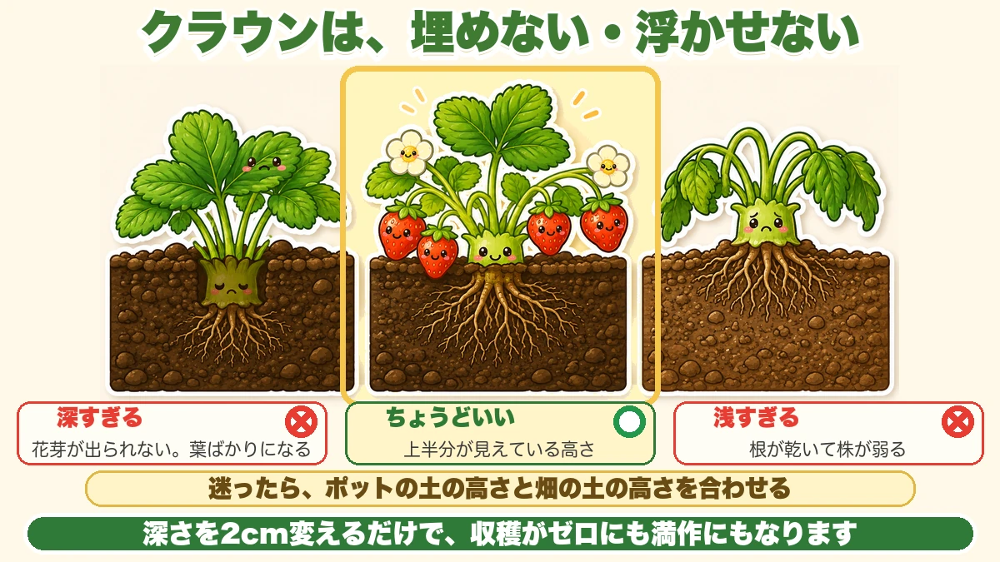
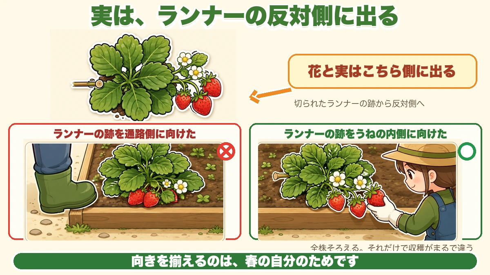
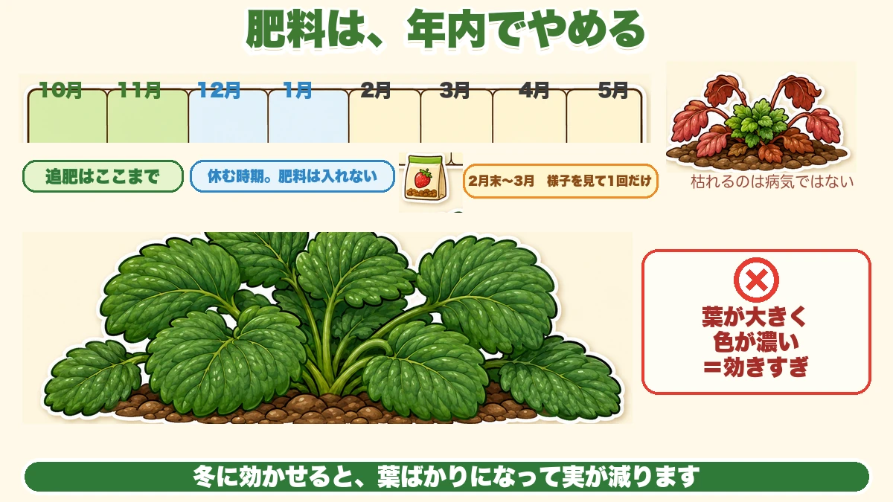

Bury the crown and the fruit disappears 🍓 A strawberry is decided the moment you plant it

🍓 "Masses of leaves and no fruit."
🍓 "I never thought about how deep to plant them."
🍓 "The fruit touched the soil and rotted."
Hello, I'm Eiko. Eight years of growing vegetables organically and without pesticides, and a teaching licence in science.
The headline:
Bury the centre of a strawberry plant and it will not fruit.
Look closely and you'll see a short, thick stem where all the leaf stalks meet. That's the crown. Leaves, roots and flowers all come out of it — and buried, the flowers can't get out.
Two centimetres of depth is the difference between nothing and a full picking. A strawberry is very nearly decided at the moment of planting.
The real reason not to bury it
It isn't only that shoots can't emerge. A buried crown rots readily, because it's the centre of the plant and it's now permanently surrounded by damp soil.
And even without rot, a buried plant can't spread new leaves properly and stays small — and a small plant going into spring gives fewer and smaller fruit.
People blame the feeding. Very often it was the planting depth.
Plant in autumn — and not late
Get them in by around mid-to-late autumn, before the cold sets in.
"Nothing grows in winter, so surely later is fine?" Above ground, yes. Below ground, no. Through winter the roots spread and extend continuously.
Plant late and that root growth is delayed, and in spring you get few flowers and poor fruit. It happens where you can't see it, so by the time you notice it's too late.
Prepare the soil 2–3 weeks earlier
Strawberry roots scorch easily. Planted into ground where the fertiliser hasn't settled in, they're damaged on the spot.
So finish the soil preparation and base fertiliser 2–3 weeks before planting. "Build the bed and plant on the day I buy the plants" is the one crop where you shouldn't.
Spring planting doesn't work
Plants are sold in spring too, and the difference is stark: there's no time to root before flowering.
A well-grown plant gives roughly a supermarket punnet's worth. Spring-planted, it's about five small fruit — sometimes three.
Even at half price, a spring plant is barely worth buying. Buy in autumn.
Don't bury the crown — and don't leave it floating

What this diagram says （図解の文字）
- Don't bury the crown, and don't leave it proud
- ✗ too deep — "flower buds can't get out; all leaf"
- ○ right — "the top half showing"
- ✗ too shallow — "the roots dry and the plant weakens"
- "If in doubt, match the pot's soil level to the bed's soil level"
The top half of the crown visible above the soil. That's correct.
Too deep and you get no flower buds, only leaves. Too shallow and the roots dry out and the plant weakens. Both are common.
Match the pot's soil level
The simplest test: set the surface of the pot's compost exactly level with the surface of the bed. The nursery grew it at the right depth — carry that depth across and you won't be far wrong.
The soil sinks when you water. If it sinks and buries the crown, scrape it away gently with a finger.
Do the sinking in advance
Better still, make it sink before you plant: dig the hole and pour water into it first. When the water drains, the bottom has settled. Add a little soil back to raise it, then set the plant in slightly high.
No later subsidence, no buried crown. For twenty plants it costs you five minutes.
Soak the pot until the bubbles stop
Stand the pot in water before planting. Advice varies — ten minutes, twenty, thirty. There's a better test than the clock.
In a bucket, bubbles come out of the pot as air and water change places. When the bubbles stop, lift it out. No guesswork.
Don't over-soak, or it suffocates. Bubbles stop, out it comes.
Choosing plants, and building the bed
Judge by the crown, not the leaves
- Crown 1 cm or more thick, and under 2 cm
- Leaves round and spreading sideways — not long and upright
- White roots showing, if you can see any
Long upright leaves mean it's drawn. Impressive-looking and hollow.
A thin-crowned plant produces no new shoot after the winter die-back, so spring brings nothing. Don't compromise here.
Never buy a plant with dark brown spots
Disease is visible in the shop. Dark brown spotting on the leaves is anthracnose — the strawberry's worst enemy. Once it has it, recovery is near-impossible, and it spreads to the neighbours. One infected plant endangers the whole bed.
However cheap it is, don't buy a spotted plant.
Propagating your own: use the second generation
If you raise your own from runners, use the grand-daughter plant — the second one along, not the first.
The reason is clear: disease is said to carry into the daughter plant but not as far as the one after it.
parent → daughter (don't use) → grand-daughter (use this) → great-grand-daughter (also fine) → beyond that, too weak
You can tell the right generation by whether it has three leaf-bearing stems; the later ones usually don't.
And: don't cut the runner until the new plant has rooted properly. The parent is feeding it until it's independent; cut early and it doesn't grow.
Build the bed higher than usual
- 30 cm (12 in) between plants
- 60 cm (24 in) bed width
- 15–20 cm (6–8 in) bed height
Ordinary beds are about 10 cm; for strawberries you deliberately go higher. The roots extend only about 30 cm from the centre and sit shallow, so standing water finishes them quickly. Making the centre of the bed slightly lower improves drainage further.
It's tempting to crowd them. Crowded, the air doesn't move and disease appears.
Orientation makes picking easier

What this diagram says （図解の文字）
- The fruit comes out on the opposite side from the runner
- "Flowers and fruit come out on this side" — "opposite the cut runner scar"
- ✗ "runner scar facing the path" ／ ○ "runner scar facing into the bed"
- "Line every plant up the same way, and picking is transformed"
Look at the base of a plant and you'll find the scar where a runner was cut — the side that was joined to the parent.
Here's the interesting part: the flowers and fruit come out on the opposite side from that scar.
So plant with the scar facing into the middle of the bed and the fruit hangs out over the path, where you can pick it without crouching. Face the scar outward and the fruit falls into the bed and gets trodden on.
Line all of them up the same way. It costs nothing and changes the whole harvest.
Keeping fruit off the soil
Fruit touching soil is very likely to spoil, and rain splashing soil spreads it.
- Black mulch film, with the fruit resting on it
- A thick layer of straw
I use film — it raises soil temperature so spring growth is quicker, and no weeds.
When to lay the film
Opinions differ. At planting works; before the cold works. I lay it in late winter, leaving the soil bare through the cold on purpose.
Strawberries need a solid period of cold before flower buds will move in spring. Rush to warm them and you can end up later, not earlier. Not hurrying is, in the end, faster.
The other reason to wait: early film raises the temperature and brings on pointless flowers. Winter flowers don't become fruit — there are no insects to pollinate them — and the plant spends resources on them anyway. If it flowers in midwinter, pick them off.
But don't overdo the cold either
Easy to get wrong. "It needs cold to break dormancy" becomes "colder is better, a shady spot will do". That backfires.
Chilling a plant hard while its crown is still small damages it, and then spring brings no flowers and no new growth. A shady site is worse still — repeated frost heave lifts the roots.
What's needed is exposure to low temperature, not punishment. A sunny site, crown left proud. That's enough.
One sheet of insect netting is enough
For winter protection, insect netting alone does it. It keeps pests out, takes the edge off the wind, and has some warming effect. You don't need plastic. It can stay on into midwinter.
And since it's there for cold and wind, you don't have to bury the hem. This part can be relaxed.
Stop feeding before the year ends

What this diagram says （図解の文字）
- Stop feeding before the year ends
- October → May, with "feed up to here" ／ "resting period — no fertiliser"
- "Late February–March: one application, if it looks like it needs it"
- "Dying back isn't disease" ／ ✗ "big leaves, deep colour = too much feed"
Fertiliser still working after midwinter gives leaves at the expense of fruit.
So feed until late autumn and then stop. After the new year, one application in late winter if it looks necessary is about right.
Keep the base fertiliser modest too — a light dressing of compost, and don't push the nitrogen sources.
There's a clear warning sign: leaves grow too large and go deep green. A leaf bigger than your palm means it's definitely overfed. If that happens, add nothing more and let the plant settle.
Don't panic when the leaves die back
Through the cold months the outer leaves redden and die. This is not disease. Strawberries rest in winter, reducing their leaves and putting reserves into the crown and roots.
And here's what I got wrong for years: don't remove the dead leaves straight away.
- A reddened leaf still holds nutrients, and the plant is drawing them back. Remove it mid-process and you throw those away
- The dead leaves are a windbreak. Strip them and the plant stands naked in the cold wind
Remove them when they're completely dry — snapping when touched — and do the proper tidy-up in late winter.
Incidentally, a second-year plant has more dead leaves, which protect it, and it overwinters well. Slightly smaller fruit, more of them.
Frost heave lifts the roots
When you see needle ice, break it and press the soil back. Heave lifts the plant and exposes the roots; dried out like that, spring rooting is poor, and repeated often enough, the whole plant blows away in a strong wind.
Look at your feet when you visit the plot. That's all it takes.
Don't water the crown in winter
However dry it looks, don't put water directly on the crown — it freezes. If it genuinely needs water, sprinkle the shoulder of the bed, which behaves like dew settling.
Flattened leaves are normal
In midwinter the leaves press flat to the ground. Don't worry — the plant is lowering itself against the cold. It looks suddenly unwell, and it's the correct winter posture.
In spring, let the bees in
As fruit starts to colour, birds take an interest, so you want netting. But netted completely, the bees can't get in either — and without pollination the fruit comes out misshapen.
The answer: raise the hem of the netting by about 5 cm (2 in). At 5 cm, birds and small mammals can't get under, and bees can. No hand-pollination needed at all.
Mesh size solves it too: a 3 cm mesh lets bees through and stops birds.
One caution: don't leave it wide open once fruit is setting — 5 cm, no more.
Crows are the exception
Through a coarse bird net, a crow will put its head in and take the fruit. "I'll pick them tomorrow" becomes half a crop gone. Where crows visit, cover the whole thing including the hem.
Hand-pollinate three days after the flower opens
For early flowers, or on a balcony, you'll need to do it yourself.
- Bees become active above about 17 °C (63 °F). Below that, an open flower isn't pollinated
- High up in a block of flats, insects simply don't arrive
Use something very soft — a fluffy-tipped tool, not a brush, which is too stiff and damages the flower. Tap gently.
And the thing people don't know: pollinating on the day a flower opens doesn't work, because the pollen isn't shedding yet. About three days after opening is the most receptive.
A flower stays receptive for around five days, so going round once a week is enough. Twenty plants takes fifteen to twenty minutes.
You can see whether it worked
- The centre of the flower green → success
- The centre darkened → failure
Dark usually means cold. Once the weather warms and insects are about, take the netting off entirely and let them do it — the fruit comes out better shaped.
Two spring pests
Thrips — the other cause of misshapen fruit
Misshapen fruit comes from failed pollination — and there's an insect interfering with the pollination: thrips, which get inside the flowers.
The awkward part: they're thin enough to pass through insect netting. "I've netted it, so it's fine" doesn't apply.
Reduce their numbers in early spring, while you can still squash them by hand; once fruit is setting it becomes difficult.
Thrips and aphids both dislike glinting light. Crumple aluminium foil, skewer it on a bamboo stick and stand it in the bed — close to the plants, and loosely, so it moves in the wind. Foil laid at the base doubles as something to rest the fruit on.
Slugs overwinter under the mulch film
Slugs hibernate under the film and only come out at night, so you never see them. Slime trails on top of the film in early spring mean they're there.
Too late once they've built up, so start in late winter:
- Clear the dead leaves and check the undersides for translucent eggs
- Plug the planting holes in the film with fleece — it blocks the route in and cushions the fruit
- Weed around the crowns for airflow
- In containers, raise the pot on a slatted board for ventilation
And this one matters: don't eat fruit a slug has been at. Bacteria. It also rots and moulds from the bite, becoming grey mould, which spreads to the fruit beside it — remove it as soon as you see it.
A plant that collapses suddenly: look at the roots
If one plant suddenly fails, lift it. Roots reduced to fine, frizzled threads mean chafer grubs eating them. Healthy roots are white and thick — the difference is obvious side by side.
Science bit: the strawberry isn't the fruit 🔬
Those little specks on the surface? Those are the actual fruits — each one a fruit containing a seed.
The red sweet part is the swollen base of the flower, the receptacle. What you eat is the platform the fruits sit on, not the fruit.
And here's the good part: the more specks there are, the bigger the red part gets, because the specks release hormones that swell the base beneath them.
Which explains misshapen strawberries: the side where pollination failed has fewer specks, so that side didn't swell.
To sum up
- ✅ Plant in autumn. The top stops, but the roots extend all winter
- ✅ Soil and base fertiliser 2–3 weeks beforehand — the roots scorch easily
- ✅ Spring planting gives about five fruit. Not worth it at any price
- ✅ Don't bury the crown. Top half visible is correct
- ✅ If in doubt, match the pot's soil level
- ✅ Water the hole first so it settles, then set the plant slightly high
- ✅ Soak the pot until the bubbles stop
- ✅ Crown 1–2 cm thick; never buy spotted plants (anthracnose)
- ✅ Propagate from the grand-daughter plant, and don't cut the runner early
- ✅ 30 cm apart, 60 cm bed, 15–20 cm high
- ✅ Runner scar toward the middle, so fruit hangs over the path
- ✅ Film or straw to keep fruit off soil. Lay the film late
- ✅ Cold is needed, punishment isn't. Sunny site, crown proud
- ✅ Insect netting alone is enough protection
- ✅ Stop feeding before the year ends. Palm-sized leaves = overfed
- ✅ Leave the dead leaves until they're bone dry — they're a windbreak
- ✅ Break frost heave; don't water the crown in winter
- ✅ Raise the netting hem 5 cm so bees get in and birds don't
- ✅ Hand-pollinate three days after opening. Green centre = success
- ✅ Thrips and slugs — foil for one, late-winter clearing for the other
- ✅ The specks are the fruit. More specks, bigger berry
You don't have to do all of it. Pick up a plant and find the thick part at the centre. Plant it so that doesn't get buried. That alone gets you fruit 🍓
Thank you for reading!